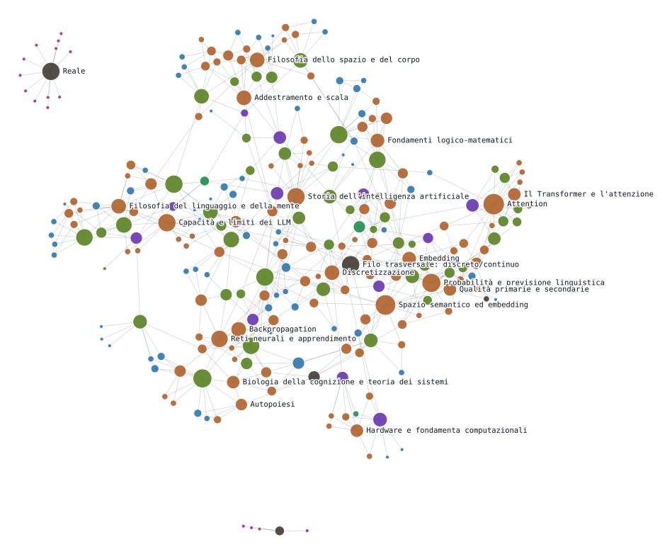

Dal bit alle entità semantiche
Il presente caso di studio integra in un unico lavoro la scrittura tecnica, che produce un saggio interattivo su come funzionano i modelli linguistici — dai principi discreti dell'hardware fino allo spazio vettoriale in cui si rappresenta il significato — e la sua cartografia: un vocabolario controllato e un'ontologia OWL che formalizzano quello stesso dominio in un grafo di entità semantiche verificabile da un reasoner. Un percorso che parte dall'analisi dell'apprendimento dei modelli linguistici per approdare al knowledge engineering.
Da «re» a «regina»
C'è un piccolo gioco linguistico che chiunque risolve all'istante, quasi senza pensarci. Alla parola «re» si toglie mentalmente tutto ciò che ha a che fare con l'essere un uomo, e si aggiunge tutto ciò che ha a che fare con l'essere una donna. La risposta arriva da sola: «regina». Sembra solo buon senso linguistico, non un calcolo. Eppure è precisamente questo calcolo — fatto non con le parole ma con i numeri che le rappresentano dentro un modello linguistico — a rivelare qualcosa di sorprendente su come i modelli linguistici (ovvero le reti neurali che imparano il linguaggio) trattano il significato.
Un interruttore non sa cosa vuol dire «regina». Sa solo accendersi o spegnersi — un bit, niente altro. Eppure, sommando miliardi di quegli scatti in una rete addestrata a prevedere la parola successiva, succede qualcosa che nessun singolo interruttore prevede: le parole finiscono per occupare posizioni in uno spazio a centinaia di dimensioni, e quelle posizioni si comportano come se avessero una geometria del senso. Quella stessa sottrazione e quella stessa somma, fatte non sulle parole ma sui numeri che le rappresentano, atterrano nello stesso punto: vicino a «regina». Nessuno ha scritto questa regola: è emersa dai dati, non è stata dichiarata da nessuno — ed è precisamente qui che comincia la domanda a cui il resto di questo lavoro prova a rispondere. Una cosa è vedere il significato comportarsi in modo prevedibile dentro un vettore. Un'altra è poterlo dichiarare, interrogare, sottoporre a un controllo che non dipenda dal fidarsi della geometria. Quello che segue racconta entrambi i percorsi: come si arriva dal primo bit a quel punto nello spazio, e cosa serve, dopo, per trasformare quella posizione in un concetto di cui si possa rispondere.
Il caso di studio è stato costruito in due fasi. La prima ha prodotto il dominio: il saggio interattivo, con i componenti tecnici — tokenizzatore, embedding, aritmetica vettoriale — calcolati su dati reali, non simulati; la stessa aritmetica che il saggio chiama esplicitamente non deduzione ma abduzione, inferenza all'analogia più plausibile. La seconda ha prodotto la mappa: il vocabolario controllato in SKOS e la micro-ontologia in OWL, verificati con un reasoner. Le due fasi corrispondono a due forme di rappresentazione della conoscenza: sub-simbolica la prima, dove il significato emerge dai dati come geometria, plausibile ma mai certa; simbolica la seconda, dove il significato è dichiarato come categoria verificabile — difendibile in un tribunale che non conosce sfumature geometriche.
Entrambe le fasi sono state svolte in collaborazione con un agente AI — un assistente in grado di leggere e scrivere codice, eseguire strumenti di verifica e iterare sul proprio lavoro, con modelli diversi impiegati a seconda del compito. Nella prima fase l'agente ha contribuito alla stesura e alla verifica tecnica dei componenti del saggio. Nella seconda, alla costruzione e al controllo formale dell'ontologia. La verifica finale, in entrambe le fasi, resta umana.
Chi lavora oggi fuori dai grandi laboratori — un'organizzazione piccola, un progetto indipendente — raramente può permettersi entrambe le competenze come ruoli separati: la scrittura tecnica che rende un dominio comprensibile a un lettore, e la costruzione di un grafo di conoscenza o di un'ontologia che lo rende interrogabile da una macchina — quello che oggi si chiama knowledge engineering. Di solito resta solo una delle due, e l'altra si perde. Questo caso di studio è un piccolo controesempio: la stessa persona, con l'aiuto dello stesso agente, ha attraversato entrambe le fasi in sequenza — prima il mestiere di chi spiega, poi quello di chi formalizza. Non perché le due competenze siano diventate la stessa cosa, ma perché un assistente capace di scrivere codice, verificare un'ontologia e iterare sul proprio lavoro abbassa il costo di attraversare il confine tra l'una e l'altra: è un piccolo contrappeso tecnico alla logica per cui solo chi possiede grande scala — infrastrutture, laboratori, ruoli distinti e retribuiti separatamente — può permettersi entrambe le competenze insieme.
I limiti che condividiamo
Il confine appena attraversato — tra chi spiega e chi formalizza, reso più economico da un agente capace di entrambi i mestieri — è un caso piccolo di una domanda più grande, e più temuta. C'è un timore che circola, oggi, attorno a ogni discorso sull'intelligenza artificiale: che le macchine stiano per sostituire l'uomo — nel lavoro, nel pensiero, forse anche nella coscienza. Il lavoro appena descritto suggerisce altro: un agente ha reso più facile attraversare un confine tra due competenze umane, non ha eliminato nessuna delle due. Eppure è proprio questo timore a costruire gran parte della retorica di mercato di questi anni, tanto nell'annuncio trionfale quanto nell'allarme. Non si può governare ciò che non si conosce, e conoscere la macchina — davvero, nei suoi meccanismi, non nelle sue promesse — è indispensabile per saperla governare. Conoscere, qui, significa conoscerne i limiti epistemologici: i limiti di ciò che possiamo sapere della macchina.
La retorica della sostituzione tratta l'intelligenza artificiale come un rimpiazzo dell'uomo, un nuovo arrivato che rende obsoleto il vecchio. In Ridondanza e Codificazione, Bateson smonta un'idea analoga a proposito del linguaggio iconico: se fosse sostituzione, i vecchi canali sarebbero decaduti. Invece cinetica e paralinguaggio sono fioriti in parallelo al linguaggio verbale — danza, musica, arte — perché comunicano ciò che il linguaggio non può: la relazione (amore, fiducia, timore), proprio perché parzialmente involontaria e difficile da falsificare. Nella storia della comunicazione, il nuovo non ha mai sostituito il vecchio quando i due svolgono funzioni realmente diverse — è cresciuto accanto.
Forse per la stessa ragione, la domanda «la macchina ha coscienza?» è mal posta. Forse chiedere «la macchina ha coscienza?» tratta la coscienza come una sostanza che un ente possiede o non possiede — un errore categoriale che Bateson aveva messo radicalmente in discussione dal punto di vista epistemologico. La domanda ben posta sarebbe relazionale: non chi ce l'ha, ma tra quali sistemi, a quale livello di contesto, si genera quella particolare ridondanza che chiamiamo coscienza — dove i limiti di mente e macchina si intersecano, e cosa quell'intersezione lascia visibile, o cieco.
Un sistema totalmente cosciente è impossibile, perché ogni circuito aggiunto per riferire su ciò che manca genera a sua volta nuovi processi all'infinito. La coscienza resta quindi «una piccola parte della verità sull'io» — non per pigrizia, ma per economia di sistema. Quello che offre non è un campione rappresentativo del tutto, ma «archi di circuito» isolati — «una mostruosa negazione dell'integrazione di quel tutto». Per le stesse ragioni è stato portato ad affermare: «la pura razionalità finalizzata, senza l'aiuto di fenomeni come l'arte, la religione, il sogno... è di necessità patogena e distruttrice di vita» (Stile, Grazia, Informazione) — perché la vita dipende da circuiti di contingenze interconnessi, mentre la coscienza vede solo i brevi archi su cui può intervenire. Operare al contrario implicherebbe un errore che si autoalimenta a ogni intervento successivo.
È in questo spazio — dove i limiti della coscienza umana incontrano i limiti, ancora da mappare, di un sistema che la estende — che si colloca il lavoro che segue.
Struttura, composizione e stack del saggio interattivo
Il saggio è organizzato in tre parti. La prima comincia dalle funzioni booleane e dall'hardware — i mattoni discreti su cui tutto il resto poggia. La seconda racconta, in quattro tappe, da dove viene il sogno di una macchina che calcola il pensiero e quali limiti ha oggi — informatica, filosofia della mente, biologia e fisica messe in dialogo, non separate. La terza e ultima ricostruisce il funzionamento tecnico vero e proprio: tokenizzazione, probabilità, lo spazio vettoriale del significato già anticipato in apertura, reti neurali, Transformer, scala.
Un filo attraversa l'intera trattazione: la tensione tra discreto e continuo. Il saggio non risolve questa tensione ma la usa come chiave di lettura. Un vocabolario di token è un insieme enumerabile, finito; lo spazio vettoriale in cui quei token vengono proiettati è invece continuo, ad alta dimensionalità — la stessa distanza che separa, in matematica, i numeri naturali dai numeri reali. Inoltre ogni componente interattivo è verificato su dati reali, non simulato: il tokenizzatore BPE è addestrato per davvero sul testo del saggio stesso; i vettori sono fastText reali, non inventati per l'occasione; la rete neurale del modulo sulle reti è effettivamente addestrata sul problema XOR, non animata a mano. Chi clicca guarda l'output di un calcolo realmente avvenuto, non una messinscena.
Il grafo e la lente semantica
Formalizzare un dominio come ontologia non è raccontarlo di nuovo in un linguaggio più rigido: è essere costretti a decidere cose che la prosa lascia sospese. Tre esempi bastano a mostrare la differenza. Cos'è un termine, e cosa non lo è? I teorici citati nel saggio non sono concetti nel dominio: sono agenti, autori di un'affermazione. Confonderli con i concetti che nominano avrebbe mescolato una gerarchia con una relazione di attribuzione. Dove finisce una gerarchia genere-specie, e comincia una relazione di tutt'altro tipo? Un generico «è collegato a» avrebbe appiattito «risolve un problema» e «è analogo a» sotto la stessa freccia. Quale incertezza va formalizzata, e quale resta solo descritta? Che un dataset sia reale o illustrativo non è una sfumatura da lasciare a un commento: è una classe che un reasoner può far rispettare, o violare visibilmente.
Questa mappa attraversa il saggio termine per termine. Ovunque il testo introduca un concetto che appartiene al vocabolario controllato — da «funzione booleana», in Fondamenti · 1, fino a «quantizzazione», nell'ultima unità di Meccanismo · 6 — quel termine è segnalato in verde e cliccabile. Il colore, in questo saggio, significa sempre la stessa cosa: si sta per lasciare la prosa ed entrare nell'ontologia. Un clic apre una tenda laterale con tutto ciò che il vocabolario sa di quel termine: la sua definizione, i concetti più specifici che lo raffinano, le relazioni dichiarate con altri termini, i teorici a cui è attribuito, e l'elenco esatto delle unità del saggio in cui ricompare.
Da lì, un ultimo collegamento porta dentro la Lente semantica vera e propria — il grafo esplorabile a uno o due gradi di vicinanza. Qui convivono due suddivisioni distinte, e vale la pena non confonderle. Nel menu a tendina della barra laterale i nodi sono raggruppati per cosa sono: un concetto, un teorico, un'unità del saggio, un capitolo, un dataset. Sette categorie di natura diversa, utili per trovare il nodo da cui partire. Una volta scelto un nodo, il grafo lo mette al centro e dispone i suoi vicini a raggiera. Qui entra in gioco la seconda suddivisione, quella che conta davvero per leggere il grafo. Ogni collegamento è colorato secondo uno di quattro gruppi che marcano il tipo di legame che unisce i nodi: una gerarchia più-specifico/più-generico, una relazione concettuale dichiarata nel testo (risolve, si contrappone a, è analogo a...), un'attribuzione a chi ha teorizzato quel concetto, o un semplice fatto di struttura del corpus (in quale unità il termine compare). Il glossario delle relazioni, in fondo al pannello, apre a tendina la definizione esatta di ciascun tipo di legame in ciascuno dei quattro gruppi — la stessa colonna vertebrale che tiene insieme le tende sparse in ogni capitolo del saggio.
Il meccanismo è raggiungibile anche da questa presentazione. Il termine «», lo stesso concetto dietro «re, donna, regina» in apertura, è lo stesso collegamento verde, la stessa tenda, la stessa lente semantica.

Questa è il layout calcolato da una simulazione a forze sugli stessi dati che alimentano la Lente semantica — nessun nodo o collegamento è stato disposto a mano. Le etichette segnano solo i concetti più connessi; il resto compone la densità della mappa, non va letto punto per punto. Valgono qui le stesse due suddivisioni appena descritte: i nodi sono colorati per le sette categorie del menu a tendina (legenda qui sotto), i collegamenti per le quattro categorie del glossario delle relazioni — troppo sottili, a questa scala, per distinguerli uno per uno, ma quel dettaglio si legge benissimo da vicino, un nodo alla volta, nella lente stessa.
Esplora il grafo completo nella Lente semantica →